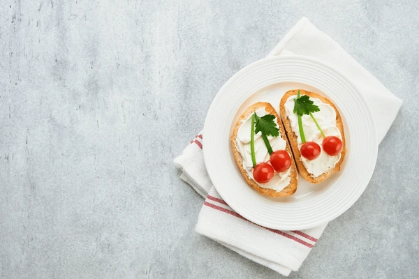

Indulge in our collection of sweet and savory recipes, perfect for any occasion

To me salads are 90% about texture and more often than not, I want that texture to be crunchy. Whether it comes from a crispy lettuce such as iceberg, or the snap of a cucumber, I find salads infinitely more enjoyable when they have some bite.
Make the dressing: Add cilantro, garlic, lime juice, and honey to a food processor or blender. Blend until the cilantro has been chopped, then slowly stream in the olive oil until you’ve reached your desired consistency. Season to taste with cumin, if using, and salt and pepper. Step 2 Make the salad: Add kale to a large bowl along with a pinch of salt. Massage kale for 1 to 2 minutes until all the leaves are slightly darkened and have softened a bit. Add green cabbage, apple, cucumber, celery, scallions, peanuts, seeds and feta. Pour over desired amount of dressing

Tender Yukon gold potatoes paired with hard-boiled eggs, celery, sweet pickles, and red onion make this Southern-style potato salad the perfect sidekick to barbecues, family gatherings, weeknight dinners, and more.
Step 1 Place potatoes in a large pot and add water to cover by at least 2”. Add 1 teaspoon salt and bring to a boil, then reduce to medium-low and simmer until potatoes are tender, 8 to 10 minutes. Using a slotted spoon, transfer the potatoes to a colander set over a bowl. Step 2 While the potatoes cool, return the water to a boil. Using a slotted spoon, carefully lower the eggs into the boiling water and boil over medium heat until just hard boiled, about 10 minutes. While potatoes are cooking, prepare an ice bath. Step 3 Transfer the hard-boiled eggs to the ice bath to cool. Peel, then dice eggs into bite-sized pieces. Step 4 In a large bowl, whisk together the mayonnaise, sour cream, mustard, pickle juice, and cayenne until smooth. Add the chopped pickles, onion, celery, potatoes, and diced eggs. Season with 1 ½ teaspoon salt and fold to combine. Season with more salt and pepper to taste. Serve sprinkled with paprika and parsley.

Is it just us, or will August always feel like the end of summer? It’s true, it might stay hot through September (and you better believe we’ll be eating outside as long as we can), but we'll always feel like August is THE month to savor the last dregs of the season. Join us as we try and eat as much summer produce as we can (in dinners, of course, but pies, desserts, and cocktails too), stay out of our hot kitchens as often as possible, and put innovative spins on the recipes we’ve enjoyed all summer long (what else can we make on the grill?). We’ve got 40 recipes to help inspire you to make dinner this August—one for every day of the month, and then some.

Think elote, the ever delightful Mexican street corn, but include some chicken for a one-pan chicken dinner. Comforting yet bright with fresh lime and smoky spices, the dish lifts the mood and satisfies cravings for explosive Mexican flavors. Corn and red peppers bring a burst of sweetness, but really, any color pepper is great—use whatever you have. Cumin provides depth, while paprika brings a hint of smoke to resemble fire-grilled elote. While crème fraîche can be swapped for cream or sour cream, the rich and slightly tangy creaminess of crème fraîche works particularly well against the heat and acid.
Step 1 Preheat oven to 375°. On a shallow plate, season flour with salt and pepper. Pat chicken dry and coat on all sides with seasoned flour; shake off excess. Step 2 In a large cast-iron or heatproof skillet over medium-high heat, heat 1 Tbsp. oil. Cook chicken, turning occasionally, until golden brown, 2 to 3 minutes per side. Transfer to a plate. Step 3 In same skillet over medium heat, heat remaining 1 Tbsp. oil. Cook shallots, stirring occasionally, until just softened, about 3 minutes. Add corn kernels, bell peppers, and tomato paste and cook, stirring, until paste is brick red, 2 to 3 minutes. Add garlic, chili powder, cumin, oregano, and paprika and cook, stirring, until fragrant, about 1 minute more. Step 4 Pour in tequila, scraping off any browned bits from bottom of pan. Add broth and bring to a simmer. Stir in crème fraîche; season with salt and pepper. Simmer, stirring occasionally, until liquid is slightly reduced and thickened, about 5 minutes. Step 5 Return chicken and any accumulated juices to skillet. Spoon sauce over. Step 6 Transfer to oven and bake, turning chicken halfway through, until an instant-read thermometer inserted into thickest part of chicken registers 165°, 10 to 12 minutes. Step 7 Crumble cheese over. Squeeze in juice from lime. Top with cilantro and sprinkle with chili powder.

Chicken and waffles = an American masterpiece and the perfect encapsulation of the unbeatable combination of salty and sweet. Though we truly are obsessed, we also feel that sitting down with an entire plate of waffles and a few pieces of fried chicken can sometimes be a little daunting. Perhaps something handheld might be a good solution? When thinking through how we could perfectly transform chicken and waffles into a perfect sandwich, we knew that just sticking a piece of chicken between two waffles might be a little dry. So we added the perfect one ingredient "sauce": runny egg yolk. It comes in the form of a perfectly fried egg that when added to the sandwich and smooshed between the waffles, coats everything in that rich creamy yolk.
Step 1 In a small saucepan over medium heat, combine honey and habaneros. bring to a low simmer, then reduce heat to low and let cook for 1 hour, stirring occasionally. Strain honey in an airtight container. (Honey can be stored in the fridge for up to 1 month and reheated in the microwave to soften.) For The Spice Mix Step 1 In a small bowl, whisk together all ingredients. For The Chicken Step 1 In a large bowl whisk together buttermilk and 2 1/2 tablespoons spice mix. Add chicken to bowl and toss to coat. Cover with plastic wrap and let marinate for at least 2 hours and up to 24: the longer the better. Step 2 Fill a large cast-iron skillet with 3/4" oil and hear to 350ºF. In a shallow bowl, whisk together flour, cornstarch and 2 tablespoons spice mix. Step 3 Right before you're ready to fry, add 2 to 3 large spoonfuls of marinade to the flour mixture and mix it in with your hands. (This will create some crumbly spots in the flour that will lead to crispy-crackly bits of batter on the chicken.) Working in batches, coat thighs thoroughly in seasoned flour, then carefully add to hot oil. Step 4 Fry until chicken is golden brown and internal temperature reaches 165ºF, 4 to 5 minutes. Move cooked chicken to a wire rack0lined baking sheet and season each thigh with salt an da pinch of the spice mix. For The Sandwiches Step 1 In a large skillet over medium heat, heat oil. Working batches, crack eggs into skillet ands season each with salt and pepper. Cook until the white is just set and the yolk is still runny, about 2 minutes. Step 2 Place one thigh on top of waffle, then top with an egg and another waffle. Repeat with remaining ingredients. Slice each in half, then drizzle with hot honey.

If mimosas are your thing, stop here! If they aren’t, you should still stick around. Cranberries, oranges, and bubbly Prosecco incorporated into a tender cake? And for breakfast too? This is exactly what cranberry-mimosa breakfast cake dreams are made of. Because we love our mimosas and our breakfast cakes, such as this blueberry-lemon one, we decided the world needed a fall-forward rendition.
Step 1 Preheat oven to 350°. Grease a 13"x9" baking pan with cooking spray. Line pan with parchment, leaving a 2" overhang on both long sides. Grease parchment with cooking spray. Step 2 In the large bowl of a stand mixer fitted with the paddle attachment (or in a large bowl using a handheld mixer), beat butter and 1 1/2 cups granulated sugar on medium-high speed until light and fluffy, about 5 minutes. Scrape down bowl. Add 1 tablespoon orange zest and beat on medium-low speed just until combined. Add eggs and egg yolks, one at a time, beating to blend after each addition. Step 3 In a medium bowl, whisk flour, baking powder, salt, and baking soda. Add half of dry ingredients and beat on low speed just until combined. Add orange juice and yogurt and beat on medium speed until most of the liquid is incorporated. Add Prosecco and remaining dry ingredients and beat on low speed until just incorporated; it’s okay if there are a couple small lumps. Scrape bottom of bowl to ensure there are no dry spots. Fold in 2 cups cranberries. Step 4 Pour batter into prepared pan and sprinkle remaining 1 cup cranberries on top. In a small bowl, combine 1/4 cup sugar and 1 tablespoon orange zest. Sprinkle over top of batter. Step 5 Bake cake until golden brown and a tester inserted into the center comes out clean, 50 to 55 minutes. Let cool. Sprinkle with more sugar and orange zest.
.jpeg)